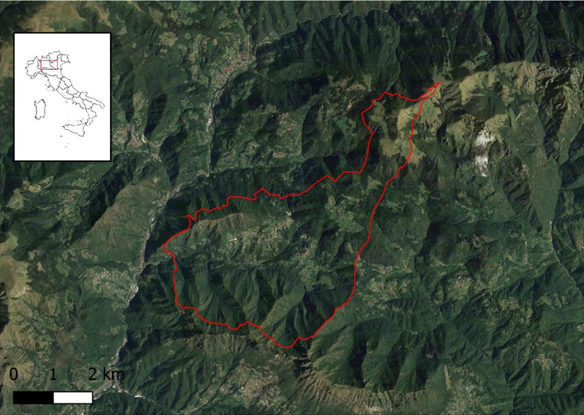
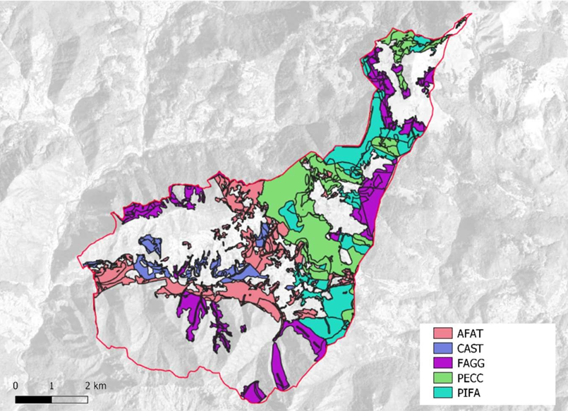
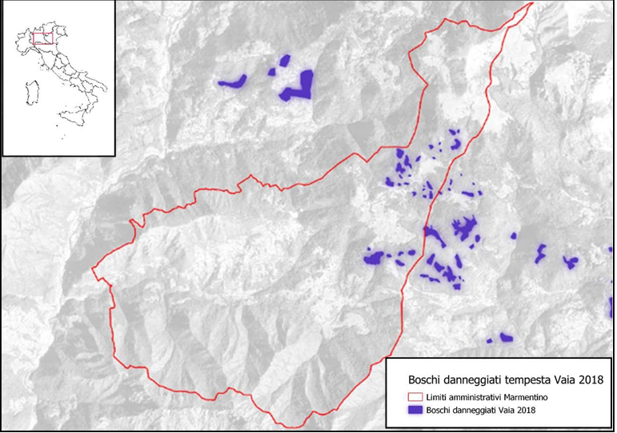
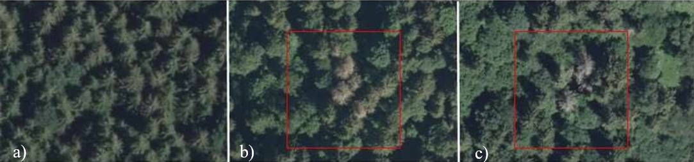
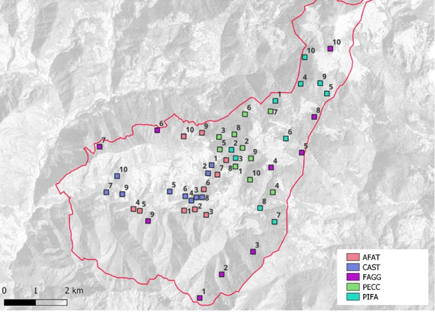
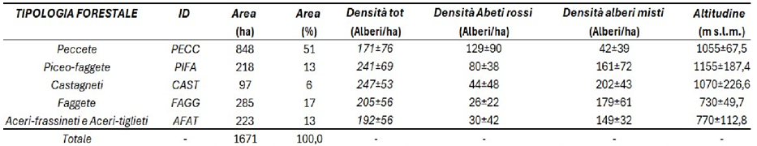
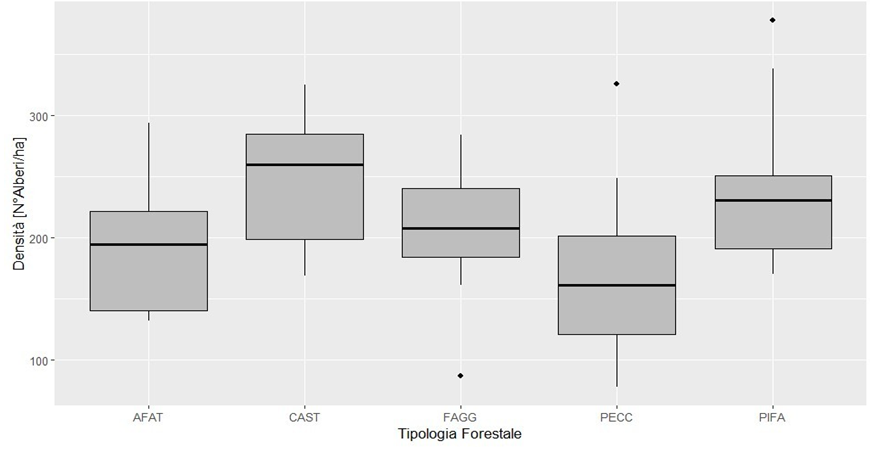
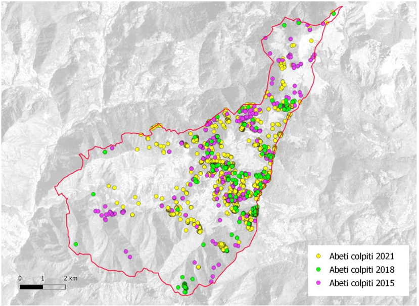
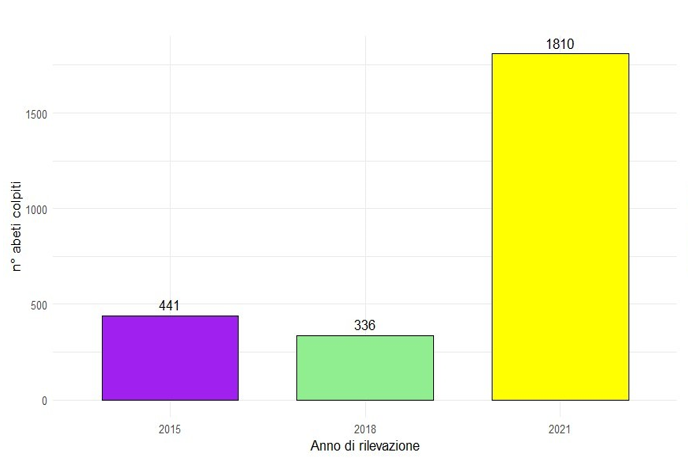
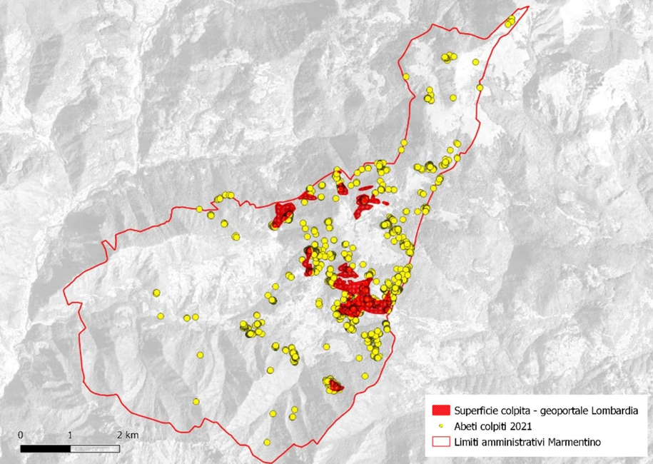

QGISREcologia forestaleAnalisi spazialeRilievo in campoFotointerpretazione
Il progetto
Il bostrico tipografo (Ips typographus L.) è un coleottero scolitide che, in condizioni di stress delle piante ospiti, può innescare epidemie di scala regionale. Nell'area boschiva di Marmentino (Val Trompia, BS), la tempesta Vaia del 2018 ha schianto migliaia di abeti, creando le condizioni ideali per un'esplosione demografica del parassita negli anni successivi.
Il tirocinio, svolto presso l'Università degli Studi di Brescia, aveva come obiettivo analizzare la dinamica spazio-temporale degli attacchi su tre rilievi storici (2015, 2018, 2021), integrando fotointerpretazione di ortofoto ad alta risoluzione, rilievi in campo e analisi statistiche in R.
Area di studio

Fig. 1. Limiti amministrativi del comune di Marmentino e inquadramento geografico.

Fig. 2. Boschi di Marmentino caratterizzati secondo la tipologia forestale (elaborata a partire dai dati del Geoportale della Regione Lombardia).

Fig. 3. Superficie forestale colpita dalla tempesta Vaia nel comune di Marmentino (elaborata a partire dai dati "Boschi danneggiati dalla Tempesta Vaia del 2018" del Geoportale della Regione Lombardia).
Metodo
Per ciascuno dei tre anni analizzati sono state scaricate le ortofoto ad alta risoluzione (pixel 20–50 cm) dal Geoportale Lombardia. La fotointerpretazione degli alberi colpiti è stata condotta in QGIS identificando i singoli abeti con chioma rossastra o assente. I punti rilevati in campo su parcelle di campionamento per ciascuna tipologia forestale sono stati integrati per validare la fotointerpretazione. L'analisi statistica in R ha compreso il confronto tra le annate e la distribuzione per tipologia forestale.

Fig. 4. a) Area non attaccata, abeti sani; b) Abeti danneggiati con colorazione della chioma rossa/bruna; c) Abeti danneggiati con colorazione della chioma grigia.

Fig. 5. Distribuzione spaziale dei siti di campionamento suddivisi per tipologia forestale.

Fig. 7. Caratteristiche descrittive delle 5 categorie forestali.

Fig. 8. Box plot della densità delle diverse categorie forestali.
Risultati
Il numero di abeti colpiti è passato da 441 nel 2015 a 336 nel 2018 per poi esplodere a 1.810 nel 2021, più che quadruplicando il valore iniziale. La tempesta Vaia ha innescato un'accelerazione dell'infestazione che ha interessato trasversalmente tutte le tipologie forestali dell'area.

Fig. 9. Distribuzione degli abeti colpiti da Ips typographus nei tre anni di rilevazione nel comune di Marmentino.

Fig. 10. Grafico del numero di abeti colpiti nei tre anni di rilevazione.

Fig. 11. Differenza tra la superficie colpita riportata nel Geoportale della Regione Lombardia e i singoli alberi individuati nel presente studio.